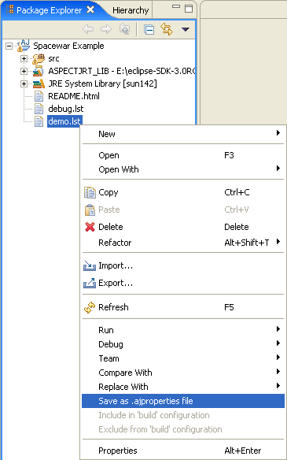
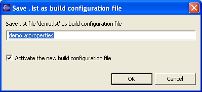
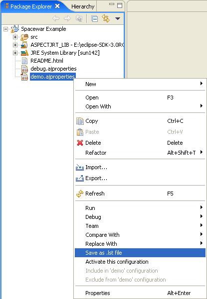
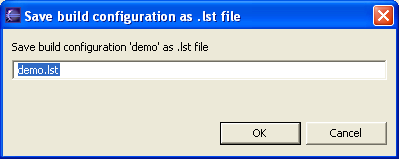

Copyright © 2004
Eclipse.org. All Rights Reserved
As
explained on the main Build Configuration
page, as of AJDT v1.1.11 there is a new way of handling build configurations.
Prior to this release build configurations were stored in .lst files.
It is,
however, very easy to convert back and forth between .lst files and the new .ajproperties
files. Starting with a .lst file,
simply right-click and select the Save
as .ajproperties file... option, as shown below.

This will
bring up the following dialog prompting for the name of the new .ajproperties file.

The new
file will then be created defining the same configuration in the new syntax.
If the dialog option is selected, the new configuration will then become the active configuration.
Conversion
back to .lst file format is also
possible. Simply right-click on a .ajproperties
file and select the Save as .lst file...
option, as shown below.  As before
you will be prompted for a name:  The build
configuration defined by the selected .ajproperties
file is then converted to the .lst
syntax and written to the specified file.